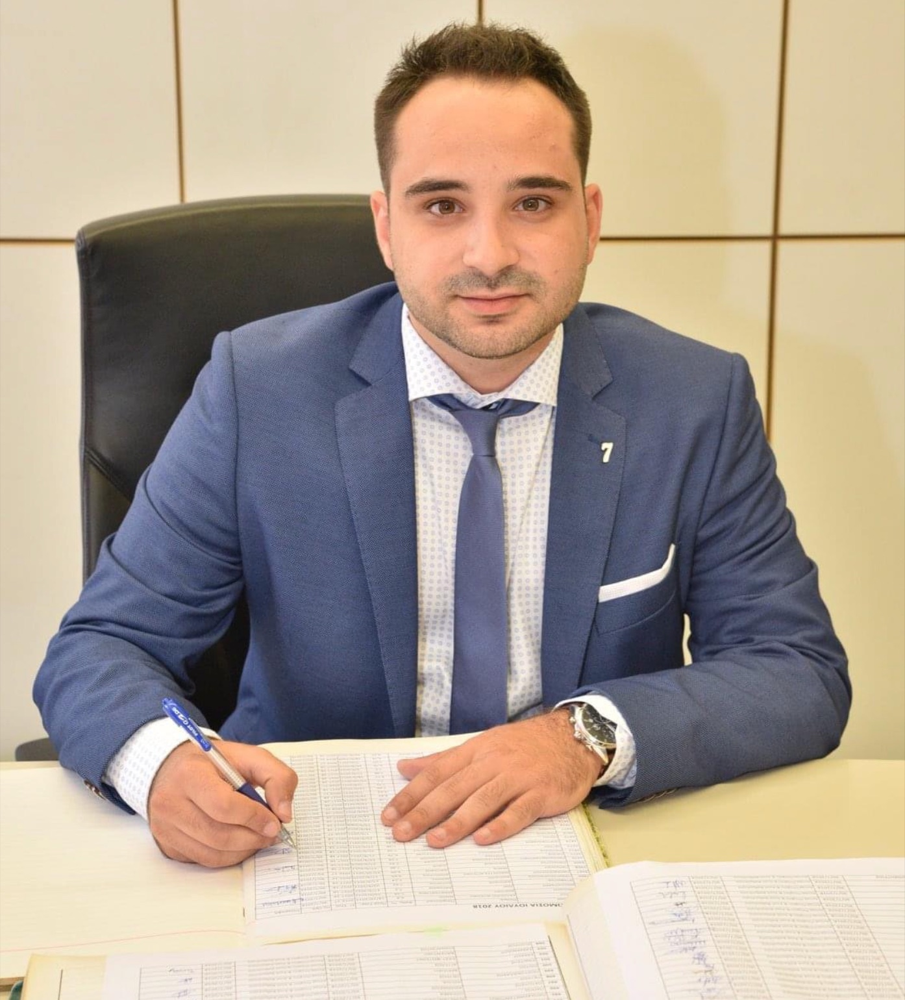

Orthopaedics
Ο Γιατρός
Αθανάσιος Πατούσης
Ορθοπαιδικός Χειρουργός
Ο Αθανάσιος Πατούσης είναι Ορθοπαιδικός Χειρουργός με σύγχρονη εκπαίδευση και διεθνή εμπειρία σε όλο το φάσμα της Ορθοπαιδικής και Τραυματολογίας. Διαθέτει εξειδίκευση στη χειρουργική ώμου, η οποία αποκτήθηκε σε αναγνωρισμένα κέντρα του εξωτερικού.
Ασχολείται με τις αθλητικές κακώσεις και τη σύγχρονη αντιμετώπιση τραυματικών και εκφυλιστικών παθήσεων του μυοσκελετικού συστήματος, προσφέροντας εξατομικευμένη και ολοκληρωμένη φροντίδα.
Απέκτησε τον πανευρωπαϊκό τίτλο FEBOT κατόπιν επιτυχούς συμμετοχής σε γραπτές και προφορικές εξετάσεις στη Μαδρίτη, ενώ είναι GMC Registered Specialist with Licence to Practise στο Ηνωμένο Βασίλειο.
Είναι Υποψήφιος Διδάκτωρ της Ιατρικής Σχολής του ΑΠΘ με ερευνητικό αντικείμενο την αστάθεια αγκώνα και έχει πραγματοποιήσει μεταπτυχιακές σπουδές στη Δημόσια Υγεία στο Ευρωπαϊκό Πανεπιστήμιο Κύπρου.
Το 2026 ολοκλήρωσε fellowship στην αρθροσκοπική χειρουργική ώμου στη Βαρκελώνη και σήμερα είναι συνεργάτης της Κλινικής Άγιος Λουκάς στη Θεσσαλονίκη.
Η Φιλοσοφία μας
Η συνεχής επιστημονική εκπαίδευση και η εξατομικευμένη προσέγγιση αποτελούν τη βάση για ασφαλή, λειτουργική αποκατάσταση και επιστροφή στις καθημερινές και αθλητικές δραστηριότητες.Αθανάσιος Πατούσης · Ορθοπαιδικός Χειρουργός